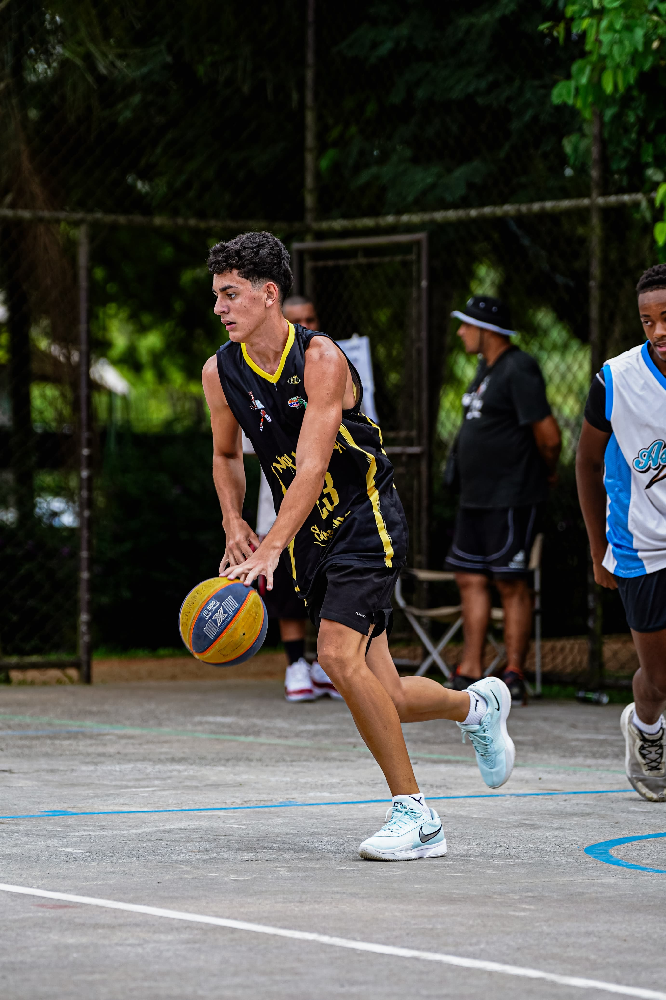

O SportLife foi feito para mostrar que o esporte vai muito além da atividade física. Ele fortalece a mente,
melhora a saúde, mostrando que em muitos casos, realmente salva vidas.
Através do esporte, muitas pessoas encontram disciplina, superação e uma nova chance de recomeçar.
O objetivo é mostrar a importancia de buscar uma vida melhor, mais saudável e com um maior propósito.
A pratica esportiva mudou completamente minha vida. Aqui eu te mostro como isso mexe com a gente de verdade.
O esporte fortalece músculos, melhora o condicionamento, aumenta a disposição no dia a dia e ajuda no controle do peso corporal. Além disso, reduz riscos de doenças cardiovasculares e melhora a qualidade do sono.
Durante a atividade física, o corpo libera hormônios como endorfina e serotonina, responsáveis pela sensação de bem-estar. Isso ajuda a diminuir ansiedade, estresse e melhora o foco e a autoestima.
O esporte aproxima pessoas, cria amizades e fortalece o trabalho em equipe. Seja em grupo ou individualmente, ele ensina respeito, disciplina e convivência saudável.
Cada treino é uma oportunidade de evoluir. O esporte desenvolve persistência, determinação e mostra que, com esforço constante, é possível superar limites e alcançar objetivos pessoais.
Um esporte incrivel, onde trabalha sua velocidade e seu raciocínio
O esporte mais famoso do Brasil, desenvolve trabalho em equipe e o condicionamento
Exercício completo que trabalha todo o corpo com baixo impacto articular.
Uma prática acessível que fortalece o coração, melhora o foco e reduz o estresse.
Meu nome é Paulo henrique e sempre tive uma grande ligação com o esporte e com tudo que ele representa.
Ao longo da minha vida, pratiquei diversas modalidades como Basquete, futebol, corrida, natação, musculação, experiências
que contribuíram diretamente em minha vida, reforçando meu desenvolvimento pessoal.
A ecolha desse projeto foi feita para mostrar a real importãncia do esporte em minha vida. O esporte vai muito além de estética:
ele cura a sua mente, melhora sua saúde, ensina diversos valores, constroi laços em sua vida e, em muitos casos, transforma uma vida.
O objetivo desse projeto é mostrar para outras pessoas que o esporte pode ser sim, um caminho para uma vida bem melhor, mais saudavel, e com um maior propósito,
dependendo apenas do seu primeiro passo.
